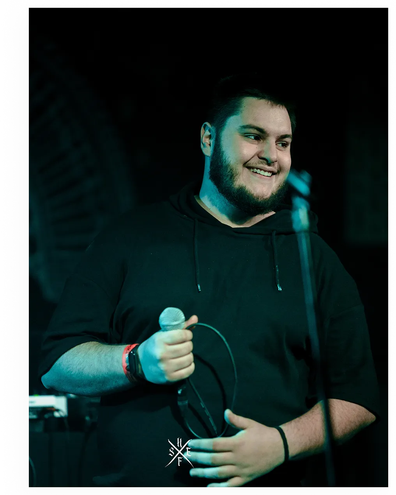

Emotions: Documenting Individuality in Expression
An inside look into my photography exploration highlighting the contrast, intense artistry, and personal human stories behind modern tattoo culture.
Read Post Media
Media
Thoughts on photography, lighting setups, and visual design storytelling.

An inside look into my photography exploration highlighting the contrast, intense artistry, and personal human stories behind modern tattoo culture.
Read Post
How playing with single-source directional lighting and deep shadows completely alters the emotional weight and depth of a portrait session.
Read Post